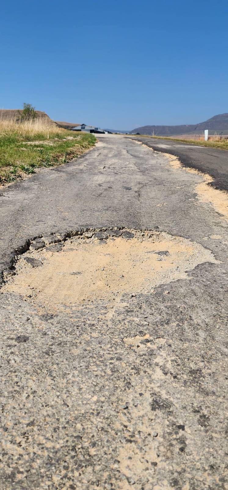

Figure 1: Severe pothole erosion exposing sub-base layers.
.jpg)
Figure 2: Advanced binder disintegration and edge breakout.
.jpg)
Figure 3: Representative view of structural asphalt degradation.
Our estate road infrastructure is deteriorating beyond the capability of routine surface repairs. Recurring potholes are a symptom of foundational sub-base degradation. Continued expenditure on temporary patching represents an inefficient allocation of capital that fails to resolve the underlying structural compromise.
To safeguard property values, enhance safety, and eliminate recurring repair costs, the Board is proposing a permanent rehabilitation of our most critical road corridors.
We are transitioning from reactive maintenance to a permanent, low-maintenance infrastructure standard. Compromised road sections will be fully excavated and rebuilt using engineered 80mm interlocking concrete pavers secured by reinforced concrete kerbing. This proven, heavy-duty specification is standard across modern residential estates, delivering decades of structural integrity.
Key Strategic Benefits:

Deferring this decision until the July 2027 AGM will expose the compromised road structure to the upcoming summer rainfall. Unsealed cracks and sub-base gaps allow water penetration, accelerating erosion and leading to exponentially higher repair costs next season.
Immediate approval enables the Board to:
The total investment required is R2.85 million, structured across two financial years.
Available Allocation: R480k remains within the current operational road budget.
Funding Requirement: R1.0 million for immediate allocation (FY 25/26) and R1.4 million for FY 26/27 execution.
Funding Source: Capital expenditure will be drawn directly from the HOA Capital Reserve Fund. No special levies or levy increases are required to fund this initiative.
| Phase / Scope Item | Target Execution | Budget (incl. 15% Contingency) |
|---|---|---|
| Phase 1: Immediate Execution – Pre-Rainy Season (Oct–Dec 2026) | ||
| Champagne Ridge Rebuild (Highest Priority Failure Zone) | Oct 2026 | R950,000 |
| Stabilisation & Holding Maintenance (Villages 2–5) | Sep 2026 – Nov 2026 | R260,000 |
| Stormwater Infrastructure & Drainage Upgrades | Oct 2026 – Dec 2026 | R55,000 |
| Phase 1 Contingency Reserve (15%) | FY 25/26 | R230,000 |
| Total FY 25/26 Program Requirement | R1,495,000 | |
| Less: Current Approved Operational Budget | (R480,000) | |
| Net Additional Reserve Allocation Required (FY 25/26) | R1,015,000 | |
| Phase 2: Post-Rainy Season Execution (Mar–May 2027) | ||
| Tier 1 Critical Corridors (Bridges 6 & 8) | Mar 2027 | R650,000 |
| Tier 2 Priority Rebuilds (Bridges 2, 4, 5 & Dam Series) | Apr 2027 – May 2027 | R550,000 |
| Phase 2 Contingency Reserve (15%) | FY 26/27 | R180,000 |
| Total Budget Request (FY 26/27) | R1,380,000 | |
| TOTAL MULTI-YEAR PROGRAM INVESTMENT | R2,850,000 | |
Postponing this authorisation will lead to progressive structural degradation over the wet season, leading to significantly higher reconstruction costs, increased liability risks, potential vehicle damage, and continued capital inefficiencies associated with temporary patching.
Homeowners are requested to approve the HOA Board’s two-year road rehabilitation strategy and authorize the utilization of reserve funds to execute Phase 1 immediately and commit Phase 2 for early 2027.
This mandate empowers the Board to:
This investment directly delivers:
For homeowners wishing to review the detailed engineering audits, tender calculations, and project schedules, the following interactive resources are available online: